동승석 에어백
-
동승석 대시보드와 탑승자 사이에 어떤 물건도 놓아두지 마십시오. 에어백 팽창 시의 충격으로 인해 물체가 동승자에게 부딪치면 동승자가 심각한 부상을 입거나 사망할 수 있습니다.
-
동승석 탑승자가 가급적 좌석을 뒤로 밀고 바른 자세로 앉아 안전벨트를 착용하도록 하십시오. 동승석 에어백은 운전석 에어백보다 크고 작동 시 충격 또한 더욱 강하므로, 안전벨트를 메고 바른 자세로 탑승하지 않은 상태로 에어백이 작동하면 동승자가 심하게 다치거나 사망할 수 있습니다.
-
주차장이나 차고에 진입할 때에도 동승석 탑승자가 항상 안전벨트를 착용하도록 하십시오. 위급 상황 발생 시 급제동하면 안전벨트를 착용하지 않은 탑승자가 차량 밖으로 튕겨져 나가거나, 에어백에 강하게 부딪칠 수 있습니다.
-
동승석 탑승자가 대시보드 위에 손이나 발을 올리거나 얼굴을 가까이 하지 않도록 하십시오. 에어백 작동 시 강한 충격을 받을 수 있습니다.
-
동승석 에어백이 장착된 차량의 동승석에는 어린이나 노약자, 임산부를 앉히지 마십시오.
-
어린이 보조좌석을 앞좌석에 설치하지 마십시오.
-
동승석 대시보드 위에 스마트폰 거치대, 컵 홀더, 방향제 용기, 대시보드 커버 등의 물체를 올려 두거나 스티커 등을 부착하지 마십시오.
-
앞유리에 에어백 작동을 방해할 수 있는 액세서리를 부착하거나 실내 미러 위에 와이드 미러를 부착하지 마십시오. 에어백 작동 시 탑승자가 물체에 부딪쳐 심각한 부상을 입거나 사망할 수 있습니다.
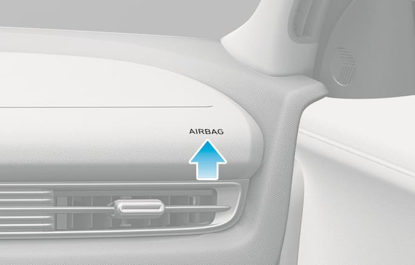
2C_PassengerAirbag
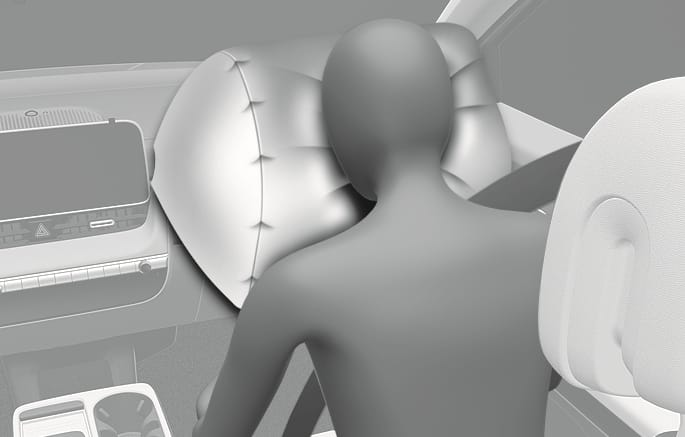
2C_PassengerAirbagDeployment
동승석 에어백은 동승석 대시보드 안에 설치되어 있습니다.
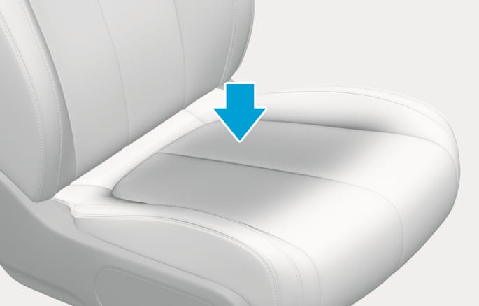
2C_OCSParts
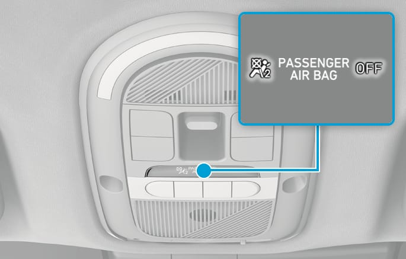
2C_OCSIndicator
-
동승석 쿠션에 장착된 승객 구분 센서
-
동승석 에어백 시스템의 작동 여부를 결정하는 에어백 제어 장치
-
동승석 에어백 작동 여부를 나타내는 PASSENGER AIR BAG OFF 표시등
2C_OCSParts
승객 구분 시스템(Occupant Classification System, OCS)은 동승석 시트 쿠션에 설치된 센서를 이용해 동승자를 성인과 어린이로 분류하거나 어린이 보조좌석을 감지하고, 탑승자 정보를 에어백 제어 장치(Airbag Control Unit, ACU)로 전달합니다.
승객 구분 시스템의 오류 및 오작동으로 인한 심각한 부상 및 사망의 위험을 방지하려면 다음 지시를 따르십시오.
-
무거운 물건, 뾰족하거나 날카로운 부분이 돌출된 물건을 동승석에 올려놓거나 등받이 포켓에 넣어 두지 마십시오. 좌석에 설치된 승객 구분 시스템(OCS)이 손상될 수 있습니다.
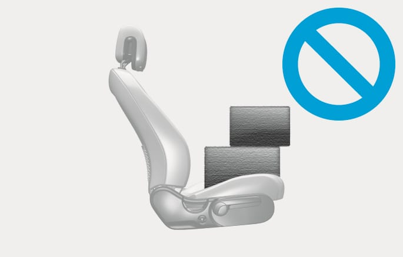
2C_OCSWarning
-
노트북이나 DVD 플레이어 등 전자 장비나 물(물통) 등 전도성 물질을 동승석 시트 위에 올려 두지 마십시오.
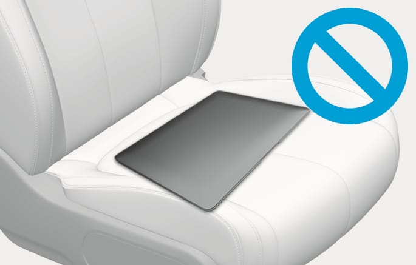
2C_OCSWarning_8
-
노트북, 위성 라디오 등 인버터 방식의 충전기를 사용하는 전자 기기를 사용하지 마십시오.
-
두꺼운 모포나 방석 등으로 동승석 시트 쿠션을 덮지 마십시오.
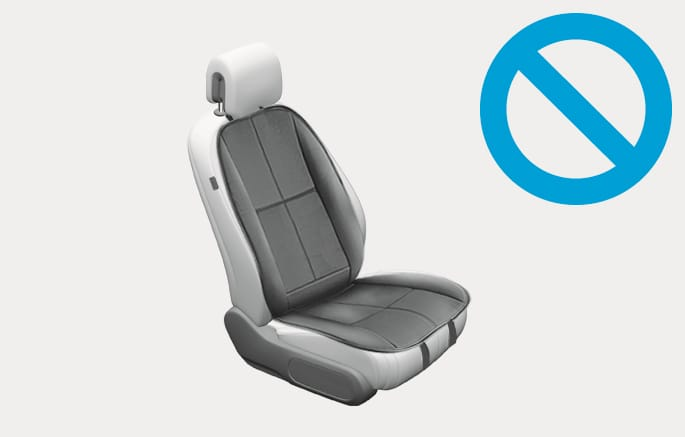
2C_OCSWarning_9
-
동승석에 다량의 음료나 물이 쏟아진 경우, 시트를 완전히 건조한 후 주행하십시오. 에어백 경고등이 켜지거나 승객 구분 시스템이 정상적으로 작동하지 않을 수 있습니다.
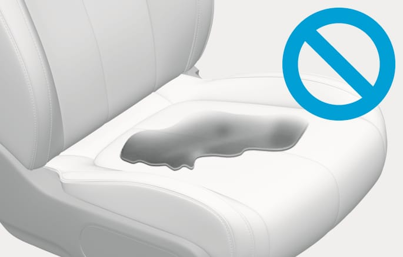
2C_OCSWarning_10
-
허리를 펴고 바른 자세를 유지한 상태로 동승석에 탑승하십시오.
-
엉덩이를 앞으로 빼서 앉거나 좌석의 한쪽으로 치우쳐 앉지 마십시오.
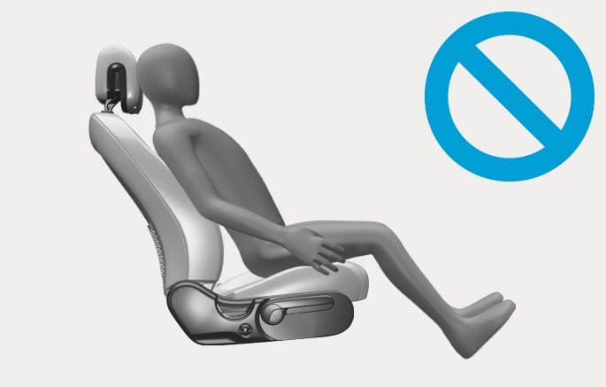
2C_OCSWarning_2
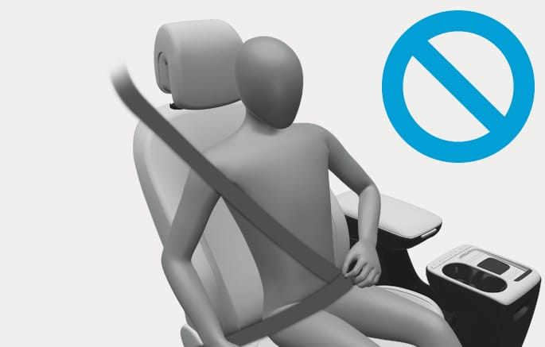
2C_OCSWarning_6
-
대시보드 위에 다리를 올리지 마십시오.
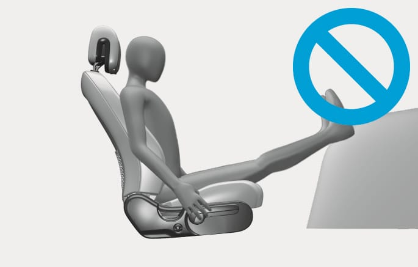
2C_OCSWarning_3
-
동승석 등받이를 지나치게 젖힌 상태로 주행하지 마십시오.
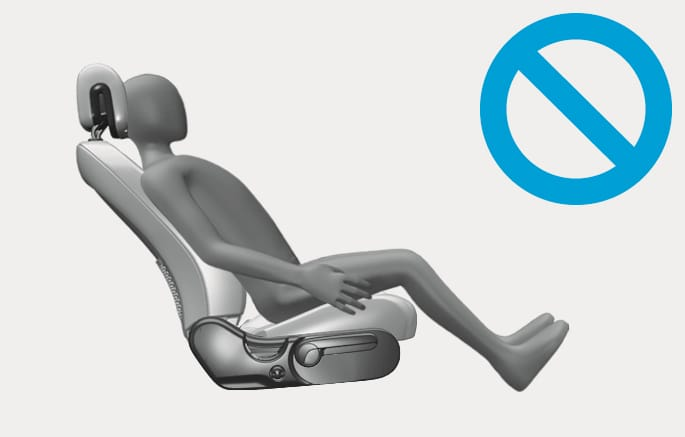
2C_OCSWarning_5
-
-
뒷좌석 탑승 시 동승석을 앞으로 접고 등받이에 다리를 올리지 마십시오.
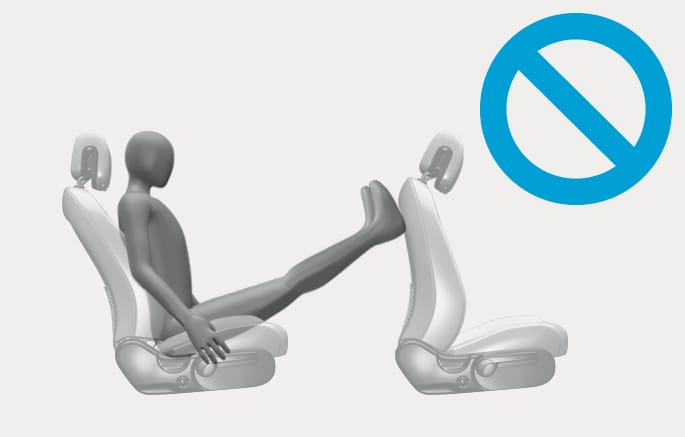
2C_OCSWarning_4
-
스키복 등 두꺼운 옷이나 엉덩이 보호대를 착용한 상태로 동승석에 탑승하지 마십시오.
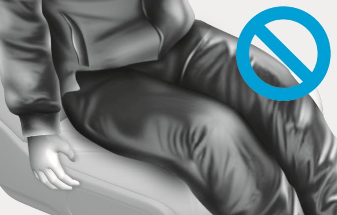
2C_OCSWarning_7
-
품질이나 성능이 부적합한 좌석을 장착하거나 시트 커버를 개조한 경우, 안전 부품(에어백/안전벨트/승객 구분 센서 등)의 성능이 감소하여 예상치 못한 부상을 입을 수 있으며 전선 단선/단락에 의한 화재위험 및 전자 부품 손상에 의한 경고가 발생될 수 있습니다. 순정부품 좌석/시트 커버는 품질과 성능을 당사가 보증하는 부품입니다.
승객 구분 시스템은 FMVSS(미국 자동차 안전기준) 208호 조항(탑승자 충돌보호)을 기준으로 설계되었습니다.
에어백 제어 장치는 탑승자 정보와 차량의 충돌 신호를 이용해 동승석 에어백 전개 여부를 결정합니다.
-
차량의 시동을 건('ON') 후 동승석 탑승자가 없다면 PASSENGER AIR BAG OFF 표시등이 켜집니다.
-
동승자가 좌석에 앉으면 몇 초 후 PASSENGER AIR BAG OFF 표시등이 꺼집니다.
-
PASSENGER AIR BAG OFF 표시등이 꺼지면 에어백 작동 조건이 만족할 때 동승석 에어백이 작동합니다.
-
PASSENGER AIR BAG OFF 표시등이 켜진 상태에서는 동승석 에어백이 작동하지 않습니다.
2C_OCSIndicator
-
동승석 탑승자가 바른 자세로 탑승한 경우 PASSENGER AIR BAG OFF 표시등이 꺼지고, 필요 시 에어백이 작동합니다.
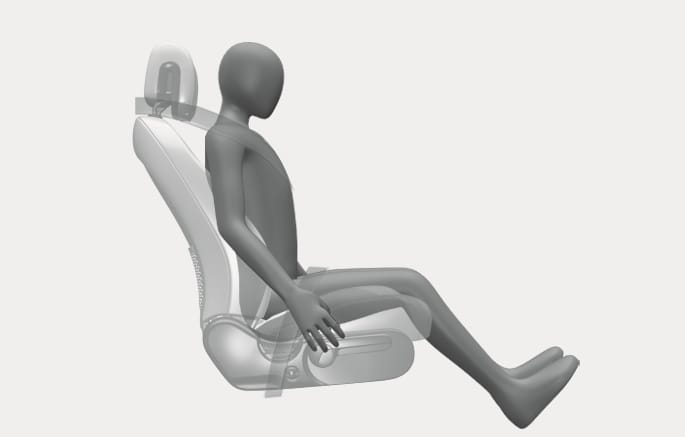
2C_HowToUseOCS
-
동승자가 탑승한 후에도 PASSENGER AIR BAG OFF 표시등이 켜져 있다면 시동을 끄고 동승자의 탑승 자세를 확인한 후 시동을 다시 거십시오.
-
어린이 보조좌석이 설치된 경우 에어백이 작동하지 않습니다.
다음의 상황이 발생하면 동승석 탑승자나 어린이 보조 좌석을 뒷좌석으로 즉시 이동하고 당사 직영 하이테크센터나 블루핸즈에서 점검을 받으십시오.
-
동승석에는 어린이 보조좌석을 절대로 설치하지 마십시오. 불가피하게 동승석에 어린이 보조좌석을 설치해야 하는 경우 보조좌석이 차량의 앞쪽을 향하도록 하고, 동승석 위치를 최대한 뒤쪽으로 이동하십시오.
-
동승석에 성인이 탑승해도 PASSENGER AIR BAG OFF 표시등이 켜진 경우
-
어린이 보조 좌석을 설치한 후 PASSENGER AIR BAG OFF 표시등이 꺼진 경우
-
체구가 작은 성인을 감지하거나 탑승자의 자세가 바르지 않은 것을 감지하는 경우, 에어백이 작동하지 않을 수 있습니다.
승객 구분 시스템의 상세 작동 조건은 다음과 같습니다.
|
승객 구분 시스템 작동 조건 |
표시등/경고등 |
장치 |
|
|
PASSENGER AIR BAG “OFF” 표시등 |
에어백 경고등 |
동승석 에어백 |
|
|
1. 성인 *1 |
꺼짐 |
꺼짐 |
작동 |
|
2. 어린이 보조 좌석*2에 앉힌 12개월 미만 어린이*3 또는 유아*4 |
켜짐 |
꺼짐 |
미작동 |
|
3. 공석 |
켜짐 |
꺼짐 |
미작동 |
|
4. 시스템 오류 |
꺼짐 |
켜짐 |
작동 |
승객 구분 시스템은 성인의 체격 조건에 해당하는 사람을 성인으로 판단합니다. 체격이 작은 성인이 동승석에 앉으면 체형 및 자세에 기초하여 어린이로 인식될 수 있습니다.
절대로 동승석에 어린이 보조 좌석을 설치하지 마십시오.
12개월 이상에서 12살 이하 어린이가 동승석에 앉을 경우 PASSENGER AIRBAG OFF 표시등이 켜지거나 꺼질 수 있습니다. 이것은 정상적인 조건입니다.
어린이를 동승석에 앉히지 마십시오. 체격이 큰 어린이가 동승석에 앉으면 체형 및 자세에 기초하여 성인으로 인식될 수 있습니다.
-
운전자와 모든 탑승자가 바른 자세로 앉아 안전벨트를 착용한 경우에만 에어백과 안전벨트가 최대한의 보호 기능을 제공할 수 있습니다.
-
다음과 같은 경우 승객 구분 시스템이 정상적으로 작동하지 않을 수 있으므로 주의하십시오.
-
동승자의 탑승 자세가 바르지 않은 경우
-
동승석 위 또는 아래에 물건을 둔 경우
-
-
시트 표면을 덮는 차량용 쿠션은 사용하지 마십시오. 품질이나 성능이 부적합한 동승석 열선 시트 사용 시 정상 작동되지 않을 수 있습니다. 순정부품은 품질과 성능을 당사가 보증하는 부품입니다.
-
승객 구분 시스템을 임의로 변경하거나 개조하는 경우 사고 시 정상적으로 작동하지 않아 탑승자가 심각한 부상을 입을 수 있습니다.
-
수리 등의 목적으로 동승석 시트를 분해 후 조립하거나 스팀이나 세제로 차량 내부를 청소한 후에는 동승자 탑승 시 PASSENGER AIR BAG OFF 표시등과 에어백 경고등이 정상적으로 작동하는지 확인하십시오.
-
동승석 시트나 승객 구분 시스템은 반드시 당사 직영 하이테크센터나 블루핸즈에서 점검을 받으십시오.